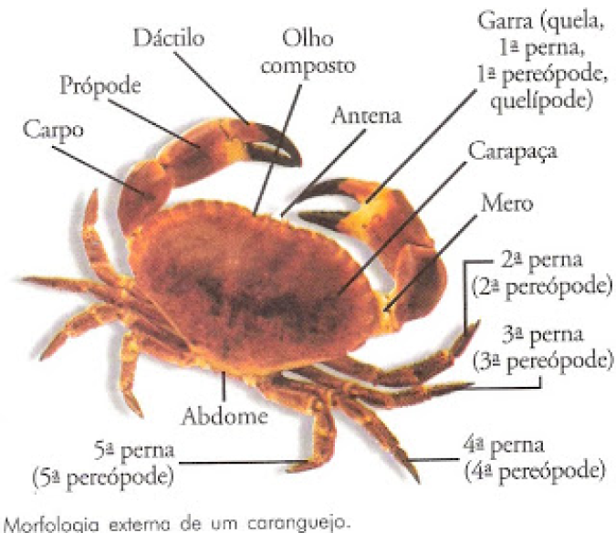

Características
Gerais
São animais invertebrados, ou seja, não possuem coluna vertebral ou crânio. Por outro lado, possuem um esqueleto externo rígido, o exoesqueleto. Nos crustáceos, o exoesqueleto é formado por quitina impregnada de carbonato de cálcio (CaCO3).
Essa estrutura atua como uma armadura, protegendo os animais através de sua rigidez e dureza. A quitina é um polissacarídeo (carboidrato) que contém nitrogênio em sua constituição que confere essa resistência a todo artrópode. Todos os artrópodes possuem corpo segmentado e apêndices (patas) articuladas. Porém, o que diferencia os crustáceos dos demais é a quantidade desses apêndices. Geralmente possuem cinco pares de patas e dois pares de antenas.

Alimentação
Assim como os crustáceos possuem uma variedade de formas corporais, apresentam também várias formas de alimentação. A alimentação dessas espécies é variada e, muitas vezes, está relacionada com a disponibilidade de alimento. Algumas espécies são herbívoras, outras são carnívoras. Existem ainda espécies que se alimentam de partículas suspensas na água, as quais podem ser formadas por plânctons, bactérias e detritos orgânicos. A digestão acontece de forma extracelular, e o intestino desses animais é terminado em ânus.
Respiração
Os crustáceos apresentam diferentes formas de realizarem suas trocas gasosas. Nos crustáceos pequenos, as trocas gasosas ocorrem em regiões onde a cutícula é delgada. Já as espécies maiores possuem estruturas especializadas, as chamadas brânquias, as quais apresentam localização e estrutura diferentes em cada espécie.
Sistema Nervoso
Os cnidários são os primeiros animais a apresentar neurônios, as células nervosas. Porém, o seu sistema nervoso é bastante simples. É caracterizado por ser do tipo difuso, as células nervosas formam uma rede que fica em contato direto com as células sensorias e contráteis.
Reprodução
A maioria das espécies de crustáceos possui sexo separado, ou seja, é possível observar a presença de macho e fêmea. Essas espécies realizam a cópula e, geralmente, o macho apresenta apêndices modificados com a finalidade de segurar a fêmea nesse momento. Além disso, é possível verificar a presença de apêndices especializados na transferência de espermatozoide até o poro reprodutivo da fêmea no momento da copulação.
Vale destacar que nem todos os crustáceos reproduzem-se dessa forma. As cracas, por exemplo, são hermafroditas e apresentam fecundação cruzada, o que significa que, apesar de terem os dois sexos, acasalam-se com indivíduos diferentes. Outro grupo que apresenta reprodução diferente da maioria dos crustáceos são algumas espécies de ostracodes, os quais se reproduzem por partenogênese (tipo de reprodução assexuada).
Após a fecundação, muitas espécies de crustáceos incubam seus ovos. Em algumas espécies, os ovos ficam presos a alguns apêndices ou ainda dentro de um saco, o qual é secretado no momento que os ovos são expulsos.
A maioria dos crustáceos possui um ou mais estágios larvais natantes. Dá-se o nome de náuplio ao tipo mais inicial e básico de larva do ciclo de vida dos crustáceos.